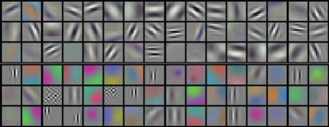
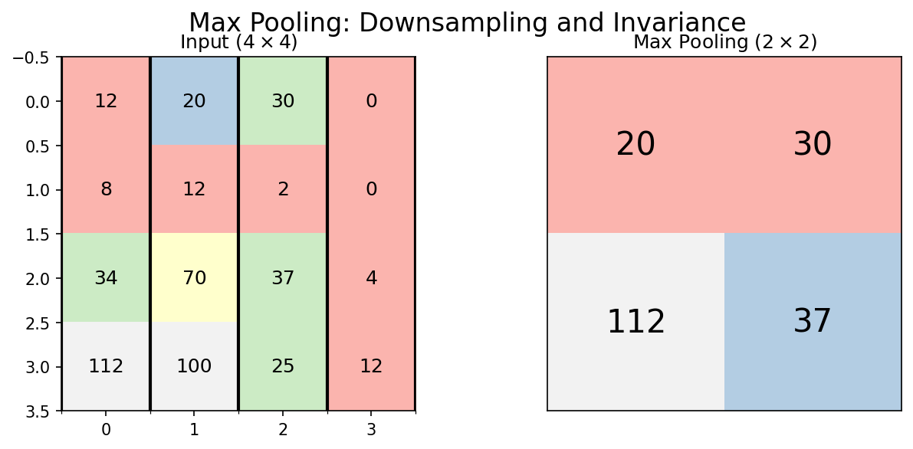
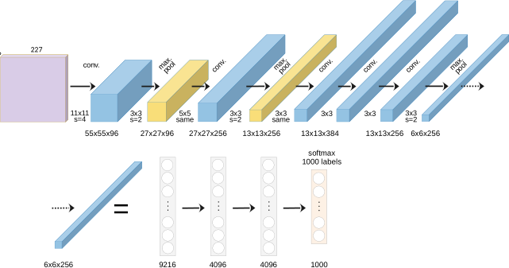
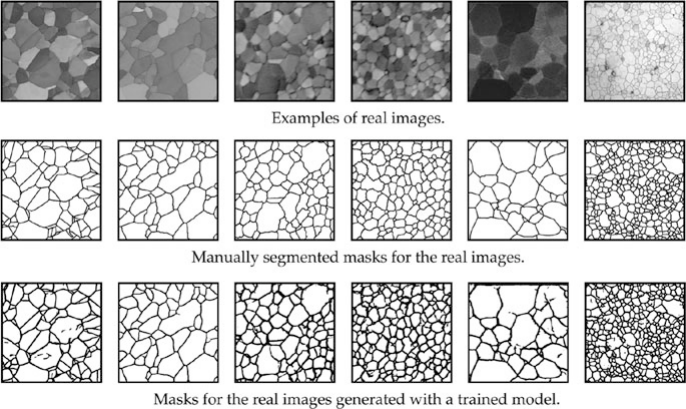

Machine Learning in Materials Processing & Characterization
Unit 5: Convolutional Neural Networks for Microstructure Analysis
Prof. Dr. Philipp Pelz
FAU Erlangen-Nürnberg


01. From Vectors to Images
- Last week: Multi-Layer Perceptrons (MLPs) for tabular data
- This week: Convolutional Neural Networks (CNNs) for images
- Why can’t we just use a standard MLP for a micrograph?
The problem: Images have spatial structure that MLPs destroy.
02. Learning Outcomes
By the end of this unit, you can:
- Explain why MLPs fail for high-resolution images (parameter explosion)
- Define convolution, kernels, stride, and padding
- Explain local connectivity, weight sharing, and translation invariance
- Distinguish between Max and Average Pooling
- Describe key CNN architectures (LeNet, AlexNet, ResNet, U-Net)
- Apply CNN concepts to microstructure segmentation and classification
Section 1: The Image Problem
Slides 03–08
03. Microscopy Data is Inherently Spatial
Materials characterization produces diverse image data:
- SEM: Surface morphology (µm resolution)
- TEM: Atomic structure (Å resolution)
- AFM: Surface topography (nm resolution)
- Optical: Macro-scale structure (µm–mm)
All share a common property: nearby pixels are correlated — physics ensures spatial continuity.
04. The Parameter Explosion (I)
Example: A modest \(64 \times 64\) image
- Input size: \(64 \times 64 = 4{,}096\) pixels
- One hidden layer with 512 neurons
- Parameters: \(4{,}096 \times 512 = \mathbf{2.1 \text{ million}}\) weights
This is already large. But real micrographs are much bigger…
05. The Parameter Explosion (II)
Realistic example: A \(1024 \times 1024\) SEM image
- Input size: \(1{,}048{,}576\) pixels
- One hidden layer with 512 neurons
- Parameters: \(1{,}048{,}576 \times 512 = \mathbf{537 \text{ million}}\) weights
- Memory: ~4 GB just for one layer!
Note
With only 100 training images, a 537M parameter model will memorize every sample perfectly — and generalize to nothing.
06. Loss of Spatial Structure
- MLPs flatten images into 1D vectors: pixel (0,0), pixel (0,1), …
- Result: Neighboring pixels (same grain) are treated identically to distant pixels (different phases)
- The spatial correlation — the key physical information — is destroyed

07. The Translation Problem
- If a precipitate moves 5 pixels to the right, the MLP sees a completely different input pattern
- It must relearn the precipitate at every possible position
- This is hopelessly wasteful — the same feature appears everywhere in the image
What we want: A feature detector that works the same way regardless of position — translation invariance.
08. Section 1 Recap
- Microscopy images have spatial structure that encodes physics
- MLPs suffer a parameter explosion on high-resolution images
- Flattening destroys spatial relationships
- We need translation-invariant feature detection
- The solution: Convolutional Neural Networks
Section 2: The Convolution Layer
Slides 09–20
09. Convolution: The Core Idea
- Slide a small “window” (kernel/filter) over the image
- At each position, compute a weighted sum
- The output is a feature map: a new image highlighting specific patterns
10. The Discrete Convolution Formula
\[(I * K)_{m,n} = \sum_{i}\sum_{j} I_{m-i,\, n-j} \cdot K_{i,j}\]
- \(I\): input image
- \(K\): kernel (filter) — typically \(3 \times 3\) or \(5 \times 5\)
- The kernel slides across the image, computing element-wise products and summing
11. Visualizing the Sliding Window

- Input: \(5 \times 5\) image
- Kernel: \(3 \times 3\)
- Output: \(3 \times 3\) feature map (without padding)
- Each output pixel “sees” a \(3 \times 3\) local neighborhood
12. The Feature Map
- The output of one convolution is called a feature map
- Each pixel in the feature map represents how strongly the kernel’s pattern was detected at that location
- High values = strong match. Low values = weak match.
A single kernel produces one feature map. We use multiple kernels to detect multiple features simultaneously.
13. Kernels as Feature Detectors (I)
Edge detection (Laplacian):
\[K = \begin{pmatrix} 0 & -1 & 0 \\ -1 & 4 & -1 \\ 0 & -1 & 0 \end{pmatrix}\]
Highlights boundaries between regions.
Blur (Gaussian):
\[K = \frac{1}{16}\begin{pmatrix} 1 & 2 & 1 \\ 2 & 4 & 2 \\ 1 & 2 & 1 \end{pmatrix}\]
Smooths noise by averaging neighbors.
14. Kernels as Feature Detectors (II)
Horizontal edges: \[K_h = \begin{pmatrix} -1 & -1 & -1 \\ 0 & 0 & 0 \\ 1 & 1 & 1 \end{pmatrix}\]
Vertical edges: \[K_v = \begin{pmatrix} -1 & 0 & 1 \\ -1 & 0 & 1 \\ -1 & 0 & 1 \end{pmatrix}\]
In a CNN: The network discovers that these filters (and many others) are useful for the task — automatically, from data.
15. Stride: Controlling the Step Size
- Stride = how many pixels the kernel moves at each step
- Stride 1: kernel moves one pixel → output nearly same size as input
- Stride 2: kernel moves two pixels → output is half the size
Higher stride = faster computation, lower resolution output. A design trade-off.
16. Padding: Preserving Image Size
- Without padding, a \(3 \times 3\) kernel on a \(W \times W\) image produces \((W-2) \times (W-2)\)
- Images shrink after each convolution!
- “Valid” padding: No padding, output shrinks
- “Same” padding: Add zeros at borders → output size = input size
- Same padding is the standard in most architectures
17. Think About This: Parameter Savings
Compare: Processing a \(1024 \times 1024\) image
| Approach | Parameters |
|---|---|
| MLP (512 hidden units) | 537 million |
| One \(3 \times 3\) conv filter | 9 |
| 64 conv filters | 576 |
That’s a 930,000× reduction! Weight sharing is the key: the same 9 weights are reused at every position in the image.
18. Multi-Channel Convolution
- Real images have depth (channels):
- Grayscale: 1 channel
- RGB: 3 channels
- Hyperspectral: 100+ channels
- Feature maps from previous layer: \(C\) channels
A kernel on multi-channel input has shape \(C \times k \times k\). It sums across all channels.
19. Activation in CNNs
After each convolution, apply a non-linear activation:
\[\text{Feature Map} = \text{ReLU}(I * K + b)\]
- ReLU keeps only positive activations: “this feature is present here”
- Same activation functions as in MLPs (Unit 4)
20. Section 2 Recap
- Convolution = sliding a kernel over the image, computing local weighted sums
- Kernels are feature detectors (edges, textures, blobs)
- Stride controls spatial downsampling; padding preserves size
- Weight sharing reduces parameters by 5-6 orders of magnitude vs. MLPs
- Multi-channel convolution enables combining features across depth
Section 3: Architectural Principles
Slides 21–30
21. Local Connectivity
- Each neuron in a conv layer “sees” only a small local patch of the input
- A \(3 \times 3\) kernel means each output pixel depends on only 9 input pixels
- Physical justification: Features in micrographs are local (grain boundaries, precipitates)
22. Weight Sharing
- The same kernel is used at every spatial position
- One set of weights → applied millions of times
- Assumption: A feature that’s useful in one part of the image is useful everywhere
Note
Weight sharing encodes translation invariance into the architecture — we don’t need to learn the same feature at every position.
23. Translation Invariance vs. Equivariance
Translation Equivariance:
If the input shifts, the feature map shifts by the same amount.
Conv layers are equivariant.
Translation Invariance:
The output doesn’t change when the input shifts.
Classification layers (after pooling + flattening) are invariant.
Equivariance preserves “where” the feature is. Invariance discards “where” and keeps only “what.”
24. The Concept of Depth
- Each conv layer has multiple filters → multiple feature maps
- The number of filters per layer is called the layer’s “depth” or “channels”
- Typical progression: 64 → 128 → 256 → 512 channels
More filters = more features detected. But also more parameters and computation.
25. The Receptive Field (I)
- Receptive field: The region of the input image that influences a specific output neuron
- A single \(3 \times 3\) conv layer: receptive field = \(3 \times 3\)
- Two stacked \(3 \times 3\) layers: receptive field = \(5 \times 5\)
- Three stacked layers: receptive field = \(7 \times 7\)
26. The Receptive Field (II)
With stride and pooling, the receptive field grows faster:
\[r_{\text{eff}} = r + (k - 1) \times \prod_{i} s_i\]
where \(k\) is kernel size and \(s_i\) are strides of preceding layers.
Design rule: The receptive field should be large enough to “see” the features you want to detect. Grain boundary detection needs at least grain-sized receptive fields.
27. The Hierarchy of Features
- Layer 1: Simple edges, dots, intensity gradients
- Layer 2: Textures, corners, simple shapes (grain boundary segments)
- Layer 3: Complex morphologies (dendrites, twins, precipitate clusters)
- Final layers: Global material state or classification

28. Full CNN Anatomy
- Feature Extractor: Alternating Conv + Pooling layers
- Classifier: Flatten → Fully Connected → Output
29. Think About This: Designing a CNN
Task: You need to classify microstructure images as “martensitic” or “ferritic.” Your images are \(256 \times 256\) grayscale. You have 200 labeled images.
What’s your concern?
Answer: 200 images is far too few to train a CNN from scratch. Even a modest CNN has millions of parameters. You’ll need transfer learning (Unit 6) or data augmentation. Start with the simplest possible model.
30. Section 3 Recap
- Local connectivity: Each neuron sees only a small patch
- Weight sharing: Same kernel everywhere → massive parameter reduction
- Translation equivariance/invariance: Features detected regardless of position
- Receptive field: Grows with depth — must match feature scale
- Feature hierarchy: Edges → textures → morphologies → classification
Section 4: The Pooling Layer
Slides 31–38
31. Why Pool?
- Downsampling: Reduce spatial dimensions → less computation
- Noise robustness: Small pixel shifts don’t change the output
- Increase receptive field: Each pixel in the pooled output covers a larger input region
32. Max Pooling
- Take the maximum value in each window (typically \(2 \times 2\))
- Preserves the strongest signal in each region
- Spatial size: halved in each dimension
\[\text{MaxPool}(x)_{m,n} = \max_{i,j \in \text{window}} x_{m+i, n+j}\]

33. Average Pooling
- Take the mean value in each window
- Preserves the overall signal level
- Less aggressive than max pooling — retains more information about intensity
\[\text{AvgPool}(x)_{m,n} = \frac{1}{|W|}\sum_{i,j \in \text{window}} x_{m+i, n+j}\]
Used more often in later layers. Global Average Pooling (over the entire feature map) is standard for the final layer of modern architectures.
34. Pooling and Shift Invariance
- If the input shifts by 1 pixel, the feature map shifts by 1 pixel
- After \(2 \times 2\) max pooling: a 1-pixel shift may produce the same output
- Pooling provides approximate translation invariance
Materials implication: A precipitate at pixel (50, 50) and one at pixel (51, 51) produce the same classification — which is physically correct.
35. The Conv-Pool Block
The standard building block of CNNs:
\[\text{Input} \xrightarrow{\text{Conv}} \xrightarrow{\text{ReLU}} \xrightarrow{\text{Pool}} \text{Output}\]
Typically repeated 3-5 times, with increasing filter count:
| Block | Filters | Spatial Size (from 256×256) |
|---|---|---|
| 1 | 64 | 128×128 |
| 2 | 128 | 64×64 |
| 3 | 256 | 32×32 |
| 4 | 512 | 16×16 |
36. Hierarchical Features: From Edges to Phases
Early layers (Block 1-2):
- Edges, intensity gradients
- Grain boundary segments
- Local texture patterns
Deep layers (Block 3-4):
- Grain shapes, phase morphologies
- Precipitate distributions
- Global arrangement patterns
37. Visualizing What CNNs See
- Filter visualization: What pattern does each kernel respond to?
- Activation maps: Where in the image does each filter activate strongly?
- Grad-CAM: Which regions are most important for the classification?
These visualization tools are essential for scientific trust — they answer: “What is the CNN actually looking at?”
38. Section 4 Recap
- Max pooling preserves strongest activations; average pooling preserves overall intensity
- Pooling provides downsampling and approximate shift invariance
- The Conv-Pool block is the standard building unit
- Features progress from edges to morphologies to classifications
- Visualization tools (Grad-CAM) verify the network’s reasoning
Section 5: Key Architectures
Slides 39–44
39. LeNet-5 (1995): The Ancestor
- Yann LeCun: Handwritten digit recognition (postal codes)
- Architecture: 2 conv layers → 2 pooling → 3 FC layers
- Only ~60K parameters — tiny by modern standards

Legacy: Proved that learned features outperform hand-crafted features for vision tasks.
40. AlexNet (2012): The Deep Learning Revolution
- Won ImageNet competition by a massive margin (15.3% vs. 26.2% error)
- Key innovations:
- ReLU activation (fast training, no vanishing gradients)
- Dropout regularization (prevents overfitting)
- GPU training (made deep networks practical)
- 60 million parameters, 8 layers

41. Going Deeper: The Vanishing Gradient Problem
- After AlexNet: let’s just add more layers!
- Problem: Very deep networks (20+ layers) stop learning
- Gradients vanish as they flow through many layers
- Training loss plateaus — the network can’t be trained effectively
Deeper is not always better… unless you have a trick.
42. ResNet (2015): Skip Connections
The Residual Block:
\[\mathbf{y} = F(\mathbf{x}) + \mathbf{x}\]
- Instead of learning \(\mathbf{y} = F(\mathbf{x})\), learn the residual \(F(\mathbf{x}) = \mathbf{y} - \mathbf{x}\)
- The skip connection \(+ \mathbf{x}\) provides a gradient highway
Note
ResNet enabled networks with 100+ layers. The 2015 ImageNet winner had 152 layers.
43. U-Net: Segmentation Architecture
- Designed for pixel-level classification (semantic segmentation)
- Encoder: Downsampling path (like a normal CNN)
- Decoder: Upsampling path (restores spatial resolution)
- Skip connections: Connect encoder to decoder at each level
44. Section 5 Recap
| Architecture | Year | Innovation | Use Case |
|---|---|---|---|
| LeNet | 1995 | Learned filters | Digit recognition |
| AlexNet | 2012 | ReLU, Dropout, GPU | Image classification |
| ResNet | 2015 | Skip connections | Very deep networks |
| U-Net | 2015 | Encoder-Decoder | Pixel segmentation |
Section 6: Materials Science Case Studies
Slides 45–50
45. Case Study: Phase Segmentation in TEM
- Task: Segment crystalline Au nanoparticles from amorphous background
- Method: U-Net trained on labeled TEM frames
- Challenge: Limited labeled data, noisy images, beam damage

46. Case Study: Synthetic Training Data
- Problem: No labeled SEM grain microstructures available
- Solution: Generate synthetic grain structures using Voronoi tessellations
- Parameters: number of seeds, regularity, boundary thickness
- Result: Perfect labels for free — no expert annotation needed!

47. Case Study: Synthetic-to-Real Transfer
- Train only on Voronoi synthetic data
- Test on real polycrystalline SEM images
- Result: Nearly perfect grain boundary segmentation!
The synthetic data captured the topological truth of grain networks — the CNN learned grain boundary detection without ever seeing a real micrograph.
48. Case Study: Property Prediction from Microstructure
- Task: Classify Ising model microstructures by simulation temperature
- Input: 2D spin configurations (binary images)
- Method: CNN classifier trained on labeled configurations
- Result: CNN learns to detect the phase transition temperature from microstructure alone

49. Current Challenges
- Data scarcity: 50 labeled micrographs vs. 14M ImageNet images
- Domain gap: Natural images ≠ micrographs (contrast, texture, noise)
- 3D structures from 2D sections: Stereological sampling bias persists
- Interpretability: What does the CNN actually learn?
Next week: Strategies to overcome data scarcity — Transfer Learning, Augmentation, and Synthetic Data.
50. Unit 5 Summary & Next Steps
Key Takeaways:
- Convolutions exploit spatial locality with shared weights
- Weight sharing reduces parameters by orders of magnitude
- Pooling provides downsampling and shift invariance
- Feature hierarchies: edges → textures → morphologies → properties
- U-Net is the standard for microstructure segmentation
Reading:
- Sandfeld (2024): Ch. 19 (CNNs) (Sandfeld et al. 2024)
- McClarren (2021): Ch. 6 (CNNs) (McClarren 2021)
Next Week: Unit 6 — Data Scarcity, Transfer Learning & Synthetic Data
References
McClarren, Ryan G. 2021. Machine Learning for Engineers: Using Data to Solve Problems for Physical Systems. Springer.
Sandfeld, Stefan et al. 2024. Materials Data Science. Springer.

© Philipp Pelz - Machine Learning in Materials Processing & Characterization